马尾琅岐旅游攻略：江河入海，海边慢生活
琅岐岛在福州马尾区，闽江在这里汇入东海。岛上有沙滩、有湖、有渔村美食，适合周末一到两天短途游。下面按“海边—湖光—美食—住宿—交通”给你一条能直接走的路线。
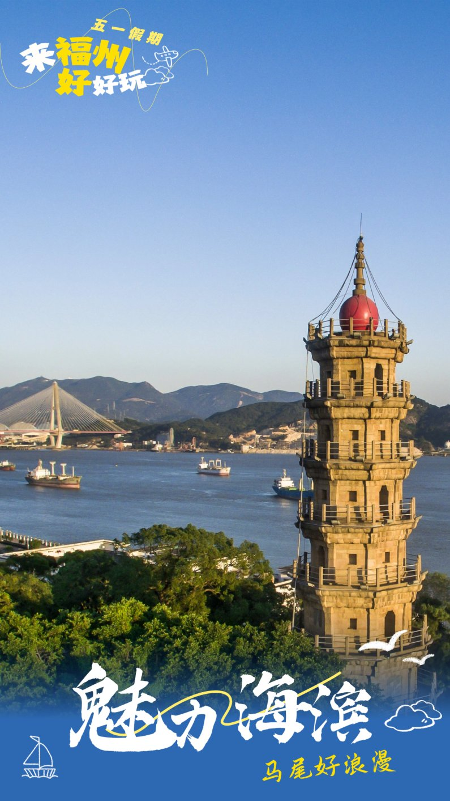
01 龙鼓度假村：岛上最主要的海边
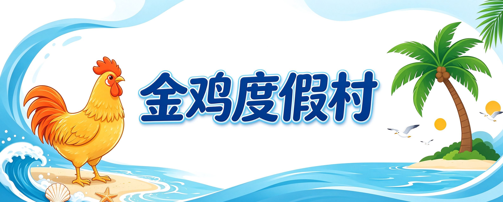
龙鼓度假村（也叫金鸡度假村）是琅岐最出名的滨海景区，海岸线长，闽江的秀气和东海的开阔在这里交汇。
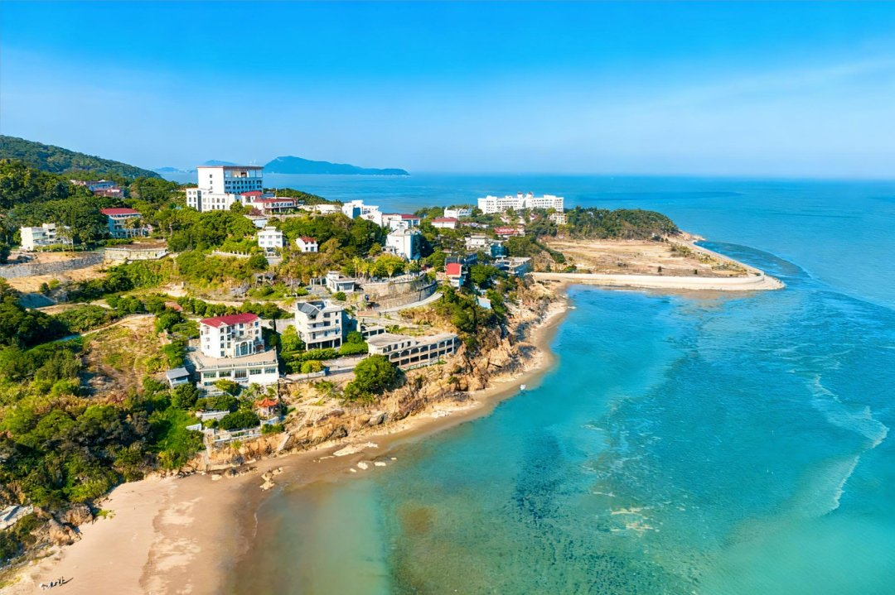
看礁石、观鸟：景区以“龙鼓十景”闻名，其中比较有代表性的是百猴屿、金凤呈祥、灵猴献桃等天然礁石造型。湿地生态好，海鸥、白鹭常在海岸栖息觅食，适合带孩子认鸟、拍照。
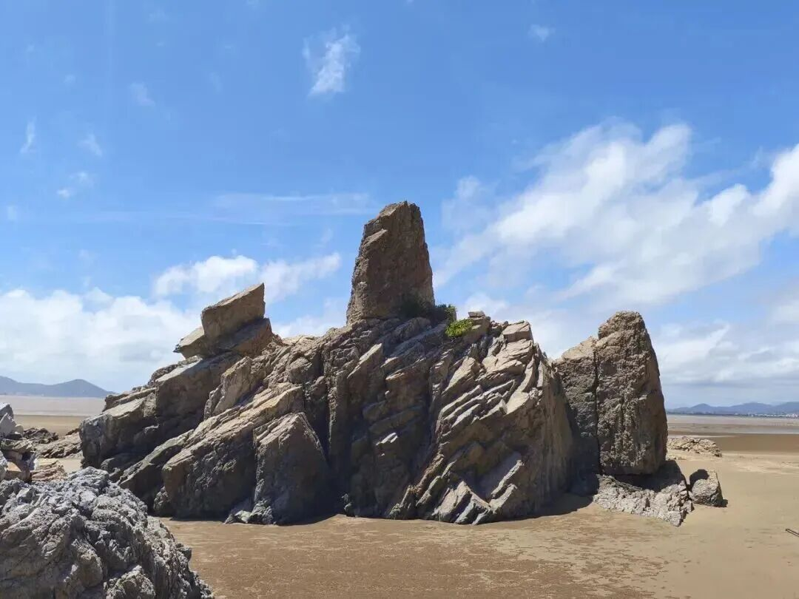
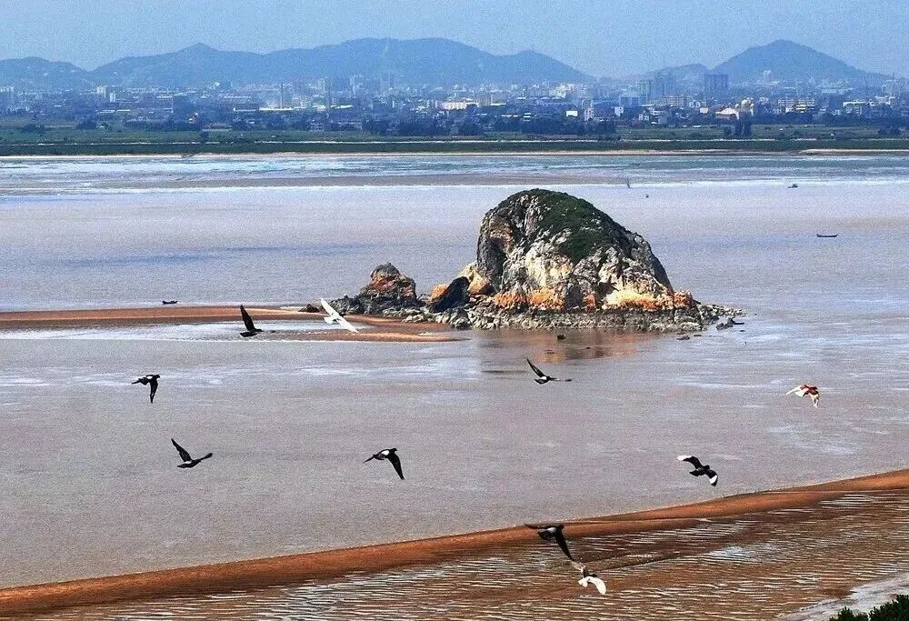
赶海：退潮时到滩涂拾贝、挖蛤。赶海要看潮汐，低潮前 1.5 小时左右下滩比较合适（具体每天潮汛时间以当天潮汐表为准）。建议穿防滑鞋、带小桶，礁石区注意脚下。
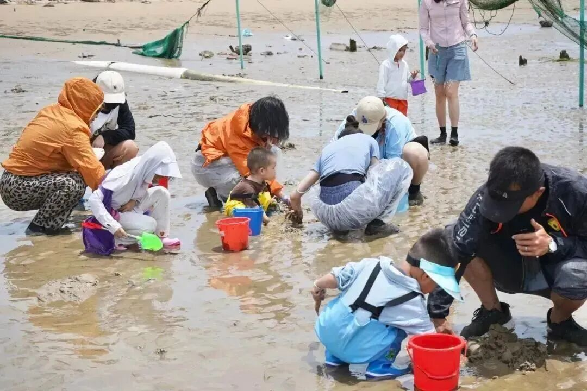
露营、沙滩越野：依山傍海的露营基地可以看云海、日出，晚上适合观星，适合想在海边过夜的家庭或朋友。沿海岸线有沙滩越野车赛道，适合喜欢速度感的游客。
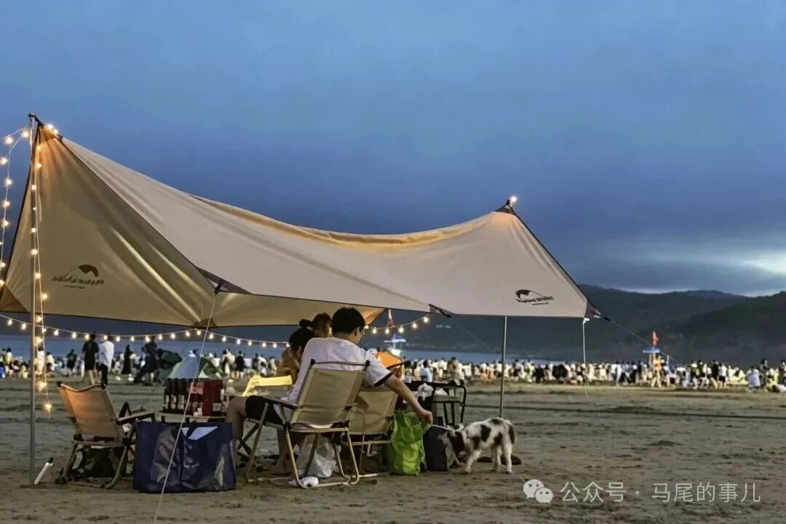
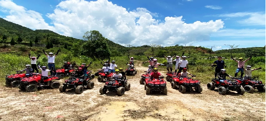
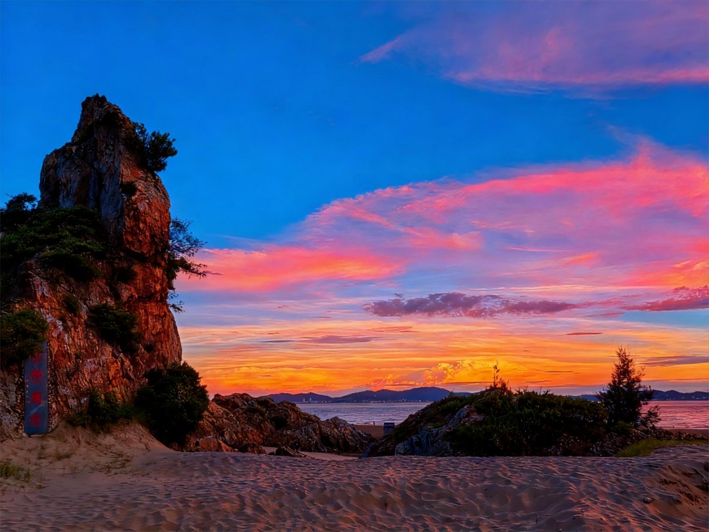
小贴士：沙滩活动建议上午或傍晚，夏天中午紫外线强，注意防晒补水。
02 红光湖公园：福州“会呼吸的公园”
红光湖公园在岛上另一侧，湖面开阔，芦苇、水鸟多，和海边的感觉完全不同，适合换个节奏慢慢走。
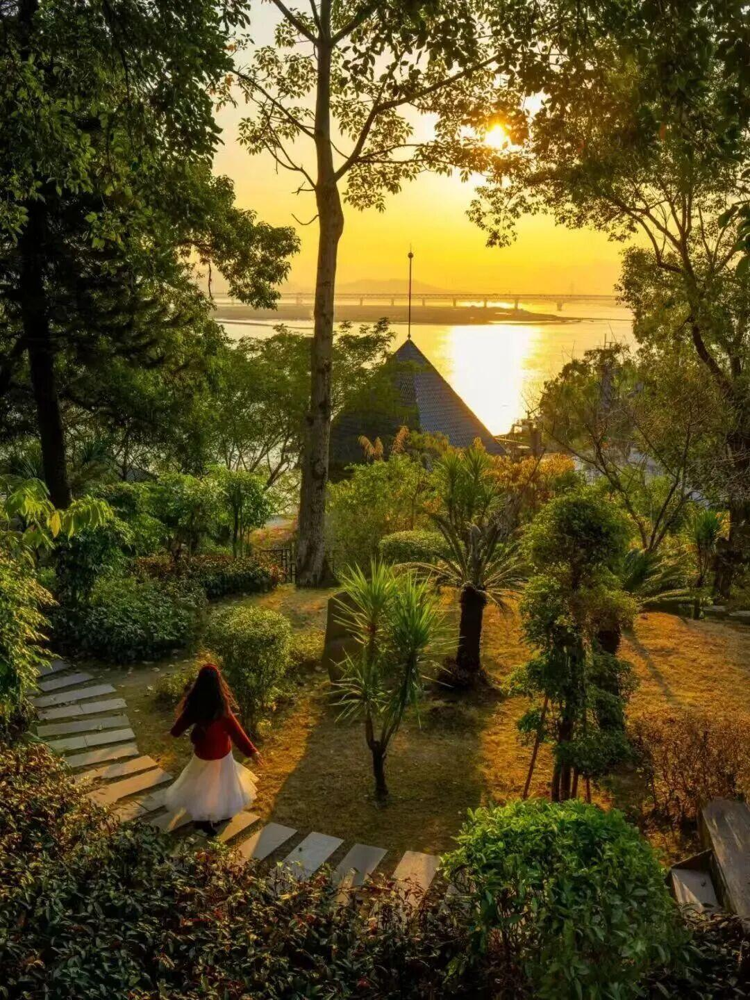
环湖骑行或漫步：园内可租自行车环湖骑行，也适合推着婴儿车、陪老人散步。
亲子：园内有儿童乐园、露营地、健身道，带孩子放电很合适。
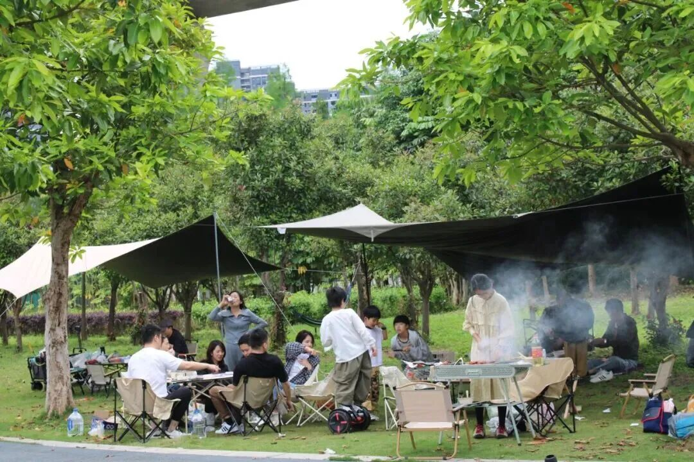
拍照：湖光山色适合拍日落，傍晚光线好的时候湖面很出片。
03 红蟳公社
红蟳公社是岛上的农文旅园区，有主题广场、采摘园区和民宿。上午可以体验桑葚采摘（季节性，以园区实际开放为准），午间吃一顿红蟳。
琅岐红蟳是国家地理标志产品，特点是壳薄、肉厚、膏黄饱满，清蒸最能吃出鲜味。岛上吃海鲜的餐厅不少，比较常被提到的是琅岐海鲜楼、小不点、和兴石锅鱼（琅岐店）等，丰俭由人，点菜前先问价。
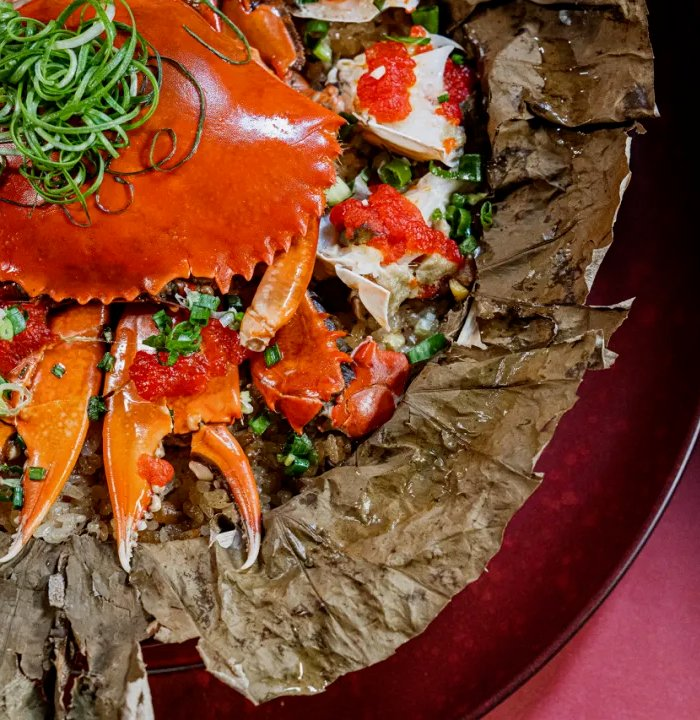
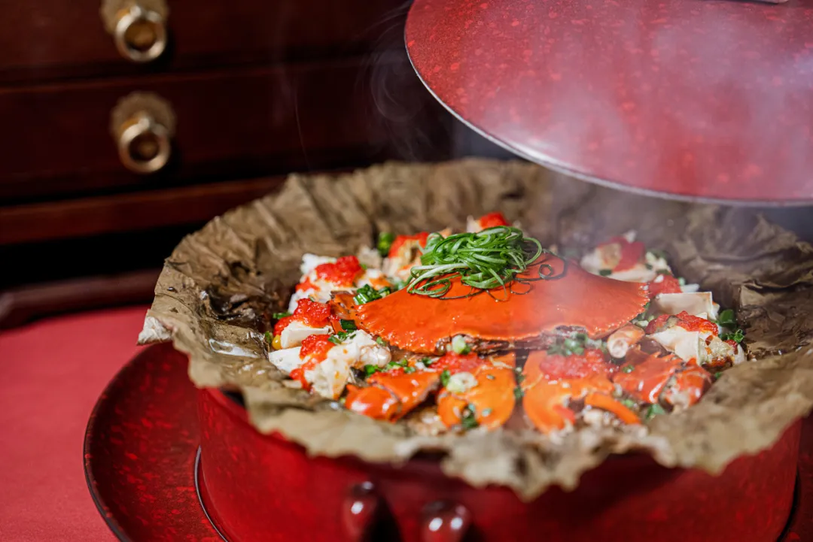
04 住宿：有福海墅（龙鼓度假村内）
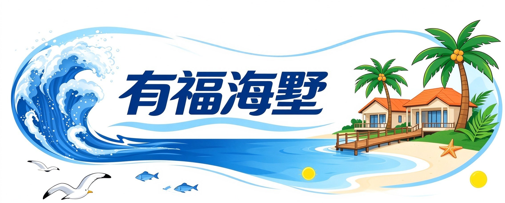
有福海墅就在龙鼓度假村里，门口就是沙滩，适合把上面这条线串起来玩：白天赶海、骑行、吃红蟳，晚上回别墅休息。
民宿对外开放三栋独立别墅，分别是菊花阁、红花阁、玫瑰阁，每栋 5 间房，适合家庭或团建包栋。别墅内有一楼麻将桌、二楼茶室、三楼天台，适合晚上聚餐聊天。需要提醒的是：泳池是度假村公共泳池，仅 7–9 月开放，其他月份不做卖点；房内禁宠物禁抽烟，宠物可放花园。
05 交通
自驾：福州市区约 40 分钟；长乐机场约 30 分钟（36 公里高速）；福州站、福州南站各约 40 分钟。
公共交通：琅岐旅游巴士（周末节假日专属，一站直达），可到达龙鼓度假村景区、红光湖公园、红蟳公社，具体发车时间、票价以当天运营信息为准。
岛上：景点之间建议自驾或打车，公交班次有限。
06 行程建议
一日游（紧凑版）：上午龙鼓度假村赶海 + 看礁石 → 中午红蟳公社吃红蟳 → 下午红光湖公园环湖骑行 → 傍晚回龙鼓看日落。
两日游（慢版）：第一天按一日游走，晚上住有福海墅；第二天上午睡到自然醒，露台喝茶、沙滩散步，下午去白云山（琅岐东部，海拔约 275 米，白云寺始建南宋，观日台天气好时可见马祖）或周边古牌坊、码头海鲜市场逛逛再返程。
本文部分琅岐风光配图引自海峡之声网专题报道，仅作旅游资讯展示使用，图片版权归原平台所有。